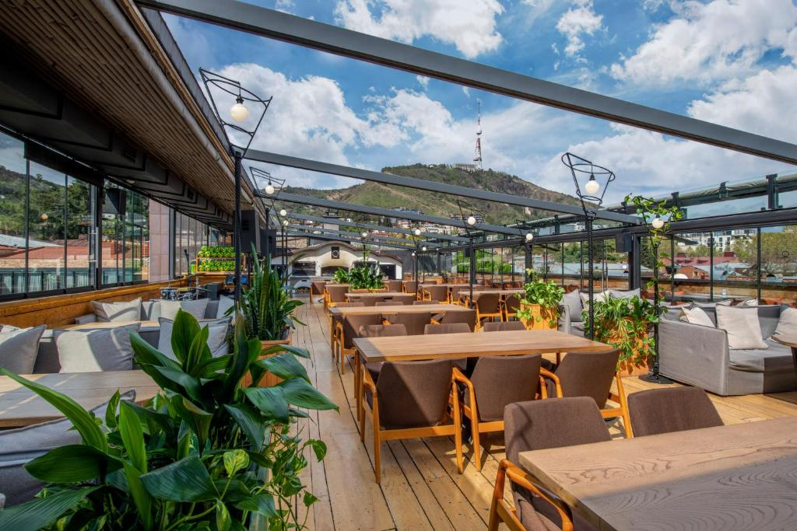

ქართლის შესახებ
ქართლი საქართველოს ცენტრალური ისტორიული რეგიონია, რომელსაც განსაკუთრებული ადგილი აქვს ქვეყნის ფორმირებაში. იგი მოიცავს მტკვრის აუზის ფართო ბარს, სტრატეგიულ გზებს და მრავალი ეპოქის კულტურულ ფენებს. ქართლის მთავარი ცენტრი თბილისია, რომლის განვითარებამ რეგიონს პოლიტიკურ და ეკონომიკურ ძალად აქცია. აქ მდებარე უძველესი ქალაქები, ციხესიმაგრეები და ტაძრები საქართველოს სახელმწიფოებრიობის სიმბოლოებად ითვლება. ნაყოფიერი მიწები, კეთილგანწყობილი ბუნება და მრავალსაუკუნოვანი ტრადიციები ქართლს უნიკალურ სახეს აძლევს. დღეს რეგიონი კვლავ მნიშვნელოვანი ცენტრია, სადაც ისტორია და თანამედროვე ცხოვრება ორგანულად ერწყმის ერთმანეთს. რეგიონში განვითარებული ხელოსნობა, სოფლის მეურნეობა და განათლება ისტორიულად აძლიერებდა ადგილობრივ საზოგადოებას, ხოლო ბუნებრივი ლანდშაფტები და მდინარის რესურსები ხელს უწყობდა ეკონომიკურ მდგრადობას და ქმნიდა რეგიონული იდენტობის გამორჩეულ საფუძველს საუკუნეების განმავლობაში.
ფოტო გალერეა
ადგილები სანახავად
გოგირდის აბანოები
სხეულის გაახლების ერთგვარი რიტუალი თბილისში უკვე საუკუნეებია არსებობს. გოგირდის აბანოები არამარტო რეკრეაციისთვის, არამედ დროის გასატარებლადაც ხშირად გამოიყენებოდა. აქ სადედამთილოები საპატარძლოების სილამაზესაც კი ამოწმებდნენ და შეუღლებისას აბანოს ნივთებს მზითევშიც აქტიურად იყენებდნენ. გოგირდოვანი აუზები იყო ძველი თბილისის მთავარი საკურორტო ზონა

დედაქალაქი თბილისი
თბილისი საქართველოს დედაქალაქია, მდებარეობს მტკვრის ხეობაში. ქალაქი მდიდარია ისტორიული უბნებით, ძველი ქალაქით, ციხე-ქალაქითა და უძველესი ტაძრებით. თბილისის არქიტექტურა ავსებს თანამედროვე შენობებს, კულტურული ღონისძიებები და მუზეუმები ტურისტებს საინტერესო გამოცდილებას სთავაზობს. ქალაქი ასევე ცნობილია გოგირდის აბანოებით და თბილი სტუმართმოყვარეობით.

სამება - ყველაზე მაღალი ეკლესია თბილისში
სამების საკათედრო ტაძარი, ცნობილი როგორც თბილისის სამება, არის დიდი მართლმადიდებლური ტაძარი თბილისში. იგი თანამედროვე არქიტექტურის ნიმუშია, სახასიათო გუმბათებითა და მოხატულობით. ტაძარი არა მხოლოდ რელიგიური ცენტრია, არამედ კულტურული და ტურისტული ღირსშესანიშნაობა, რომელიც ყოველწლიურად უამრავ სტუმარს იზიდავს.

სასტუმრო და რესტორანი
IOTA Hotel Tbilisi
IOTA Hotel Tbilisi მდებარეობს თბილისში, თავისუფლების მოედნიდან 300 მეტრში, სასტუმროს მთელ ტერიტორიაზე უფასო WiFi-ით სარგებლობს. სტუმრებს შეუძლიათ ისარგებლონ ადგილზე არსებული რესტორნითა და ბაღით. ყველა ნომერი აღჭურვილია ბრტყელეკრანიანი ტელევიზორით, სეიფით და საკუთარი აბაზანით. ზოგიერთ ნომერს ასევე აქვს ტერასა ან აივანი. თქვენი კომფორტისთვის, სტუმრებს შეუძლიათ ისარგებლონ აბაზანის ხალათებით, ჩუსტებითა და უფასო სააბაზანო ნივთებით. სასტუმროში არის 24-საათიანი მიღება.


POLIPHONIA - რესტორანი
POLIPHONIA არის ნატურალური ღვინის რესტორანი, რომელიც გთავაზობთ ველურ, სეზონურ და ადგილობრივ ინგრედიენტებს. ისევე, როგორც პოლიფონიური სიმღერის ჰარმონიები შეიძლება იყოს თმის ამაზრზენი ელექტრომაგნიტური, ჩვენ ვცდილობთ მივაღწიოთ იმავე დაბალანსებულ დაძაბულობას ღვინოებსა და კერძებში, რომლებსაც გთავაზობენ ჩვენს შემოქმედებით და არაფორმალურ სასადილო ოთახებში.